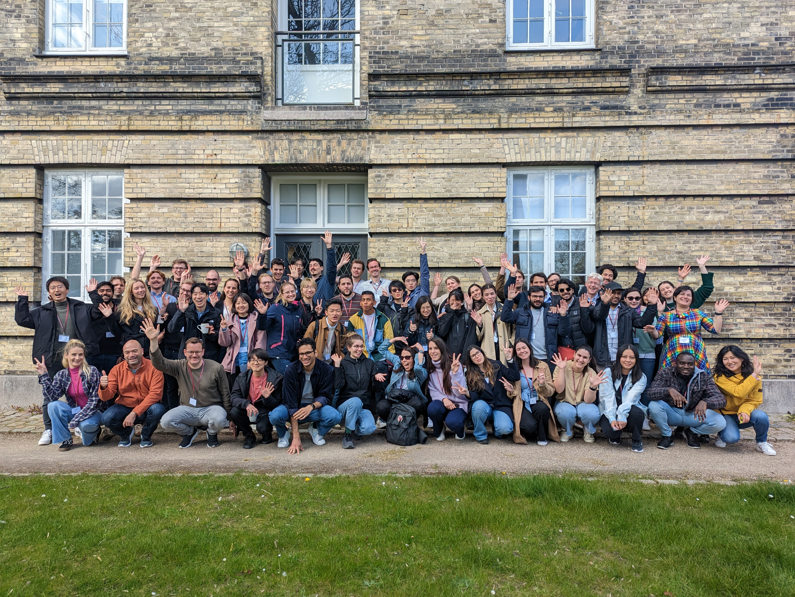
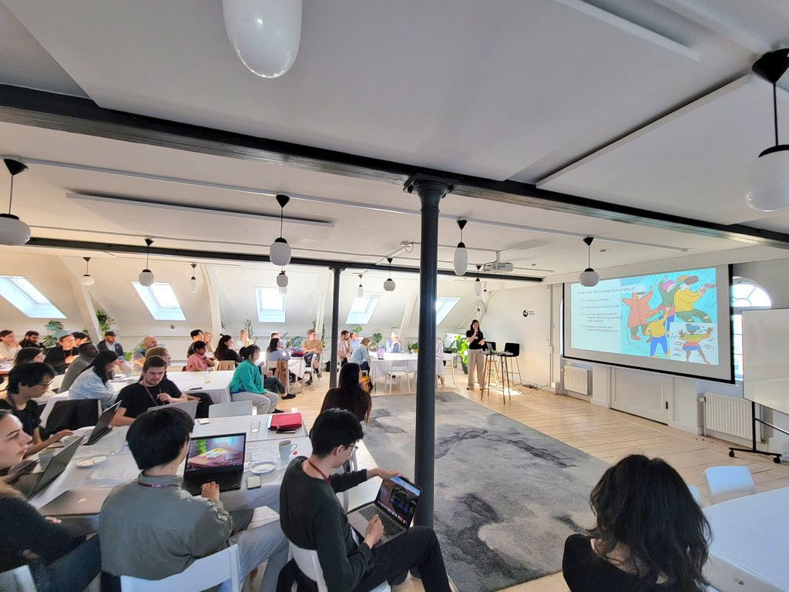
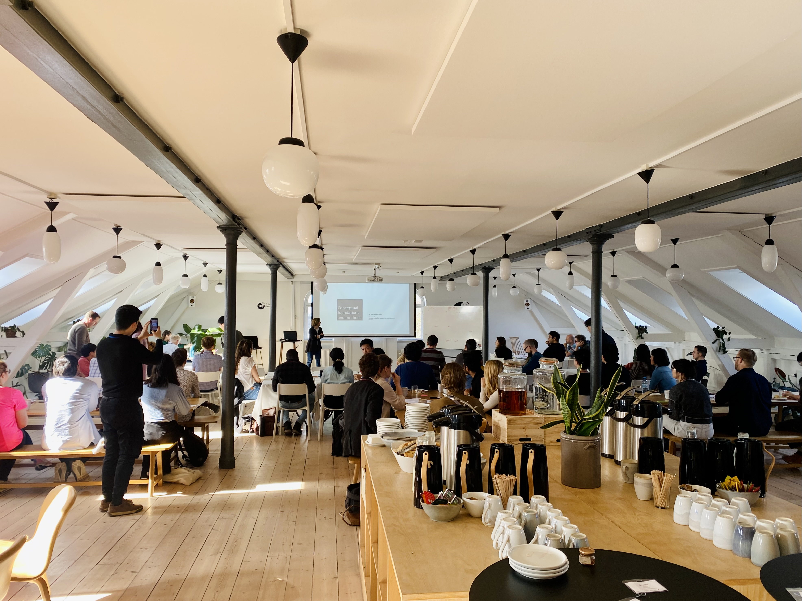

community events
I like to be invovled in the academic community by organizing local community events and being involved in conference organization. Below are a few examples of academic community events I have co-organized.
Nordic Pre-CHI 2025
The Nordic Pre-CHI event provides an opportunity for researchers from the Nordics to present their accepted CHI 2025 papers and discuss them in a smaller circle. Additionally, it provides an excellent opportunity for younger researchers to get a taste of the quality of work presented at CHI and network with other peers, as well as senior researchers. Therefore, everyone from students to professors interested in HCI is welcome.


Danish HCI Day 2024
The Danish HCI Day brings together HCI researchers from all over Denmark to network and exchange research ideas.

Extended Reality Symposium 2023
This symposium explores Extended Reality (XR) as a new scientific method for health sciences and its applications for training, treatment, and diagnostics. The symposium is targeted to XR researchers and researchers in the health sciences who apply or are interested in understanding the potential of XR, as well as the public. Knowledge sharing, skill exchange, and interactions between the target groups are facilitated by featured talks, lightning talks on applications, a panel for grand themes in XR, and a poster and demo reception.
Extended Reality Summer School 2023
The summer school on XR invited participants to Copenhagen, Denmark, for three days May 2-4. The participants learned about a wide range of topics across Human–Computer Interaction with Extended Reality, including XR prototyping, eye-tracking, haptics and perception. The learning sessions in the first two days consisted of introductory lectures, brainstorming, and hands-on hackathon activities, as well as an engaging and fun social program. The grand finale of the summer school was the one-day symposium on XR, where the summer school participants were be joined by other XR researchers to hear featured talks from leading international XR researchers, including a panel discussion about the grand challenges on XR and health by local XR industry leaders. The summer school participants presented their own ideas in a poster and demo session at the symposium.


